План казался мне прекрасным, единственно, что я не учел это то, что нам уже не по 17 лет и 2 подряд практически бессонные ночи малость напрягают. Так, что если кто соберется повторить такой вариант заброски к этому надо быть готовым. Зато по пути туда не было ни одного дня меньше 80 километров на велосипеде. Ну да ладно, давайте обо всем по порядку. Автобус с гордым название Евролайнс должен отъезжать поздним вечером от Балтийского вокзала. Ждем. Автобус задерживается. Велики давно собраны и упакованы в чехлы. Наконец появляется нечто отдаленно напоминающее большую маршрутку. Неужели это наш? Так и есть ((( Засовываем велики в багажное отделение. Да вам тут не Турция и водитель помогать это делать не собирается. Зато и денег не просит, хоть на том спасибо. Салон внутри полностью соответствует внешнему виду автобуса - колени упираются в переднее кресло, сами кресла жутко не удобные. Неужели на этом можно ехать 12 часов? Трогаемся. Одна радость - ночь. Кое-как задремали.
Граница. Звучит команда всем выйти из автобуса с вещами, затаскиваем велики и рюкзаки в узкие двери, ловим таможенника и суем ему заранее заполненные декларации на байки. Он сопротивляется, типа да не надо, да бросьте вы. . . знаем мы ваше не надо! Не отвертишься! Ставь штамп! Ставит с печальным вздохом. Самое смешное то, что никто даже не собирался проверять или просвечивать наши веши. Зачем, спрашивается, заставили таскать их туда-сюда. Хотя понятно - положено так.
Вот и Эстония, такого количества колючей проволоки как на этом переходе я не видел не где! Рядом с автомобильным коридором идет вело -пешеходный, по которому шествуют толпы людей как будто это тротуар обычной городской улицы. Эх, сейчас бы на велике, уже давно прошли бы. Нет. Сидим в автобусе. Пограничник собрал паспорта и ужасно долго колдует над ними в будке. В непроизвольно всплывают анекдоты про эстонскую неторопливость. Раздают обратно паспорта. Мдя. Штамп поставили так, что на нем не видно не только даты, но и месяца. Вернее у меня нет даты, а у жены месяца. Представляю, сколько времени теперь у нас будет занимать пересечение финской границы. . .
Светает, дорога равнинна и однообразна. Нет, это не велосипедная мечта. Останавливаемся в городах минут по 5, люди входят и выходят. Чай, в отличие от турецких басов, не подают, выясняется еще одна прикольная особенность этого автобуса - если дверь в туалете закрыть изнутри, то открыть ее можно только снаружи. Похоже, уважают в Евролайнс Задорнова.
Подъезжаем к Риге. Странное такое чувство, будто за окном некая смесь нашего и европейского. Силюсь понять чего больше - вроде нашего, совдеповского. . . или нет? Пятиэтажки сменяют шикарные сосновые леса, эх на велик бы сейчас. Еще ближе к городу начинается сплошная пробка, в итоге автобус опаздывает на 3 с лишним часа. Хорошо, что у нас большой запас по времени.
Исторический центр города оказывается буквально в 200 метрах от автовокзала. Велосипеды нам тут явно ни к чему, но девать их некуда. Да, Рига интересный город! Жаль очень много народу. На площади проходит какой-то музыкальный фестиваль, толпы туристов, а вокруг все очень красиво и удивительная атмосфера, хочется ходить и ходить по этим улицам.
Кареты двух веков:
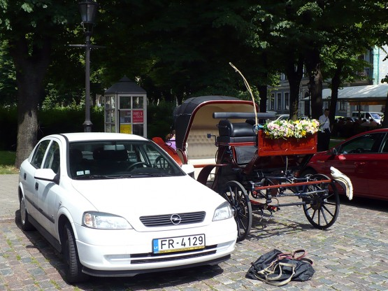
Давно тут сидим:
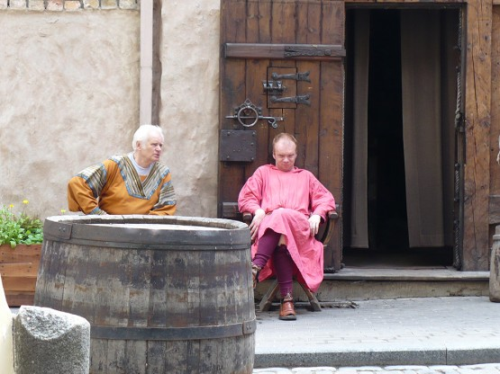
Домский собор, жаль орган на реставрации:
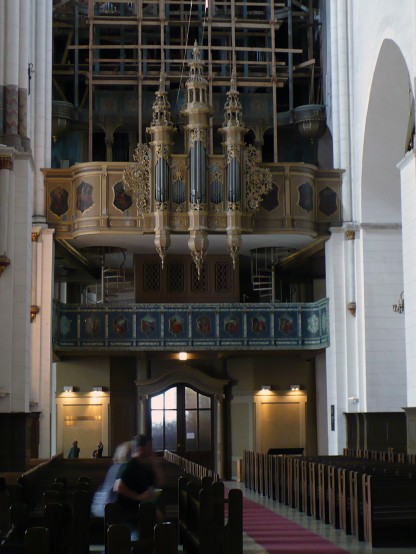
Такие витражи не могут оставить равнодушными:
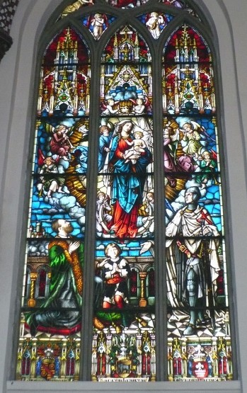
Совершая броуновское движение по городу, натыкаемся на уютный парк, где все так чистенько и степенно.
"Маша+Саша навсегда" и еще примерно тысяча вариантов:
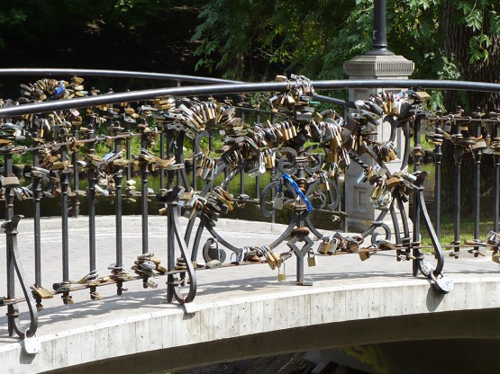
Однако центр Риги все-таки очень компактный, крутанул педали разок другой, и ты уже выехал из него. Впереди Юрмала. Те, кто катался со мной в покатушках, знает мое стремление "срезать". Просто так приехать в Юрмалу по дороге я естественно не мог, следовательно, родился затейливый план доехать до берега моря вдоль реки, а дальше по песку, вернее по его мокрой кромке, приехать в Юрмалу.
Вот тут меня навигатор, прямо скажем, подвел, вернее карта загружена в него. На карте было четко видно, что есть сплошной берег до Юрмалы. Через 10 километров бодрой езды по песку уперлись в широкий пролив. Яхты плавают, красота. Пришлось делать большой крюк. В Юрмалу приехали уже затемно. Посидели в кафе, удивительно, но все кругом говорили исключительно по-русски.
Вот таким затейливым образом мы накрутили почти 90 километров по Риге и окрестностям, пока уже глубокой ночью не приехали в аэропорт. Запаковали байки, поспать осталось 3 часа. День прошел не зря.
Трек этого дня Трек 2008-07-11.gdb
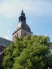 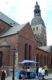 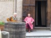 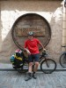 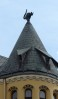 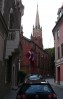 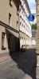 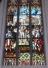 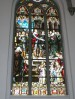 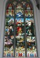 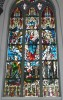 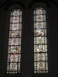 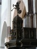 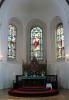 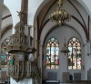 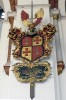  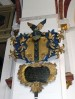
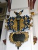  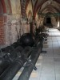 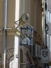 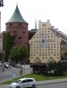 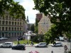 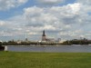 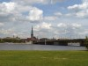 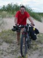 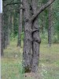
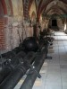 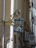 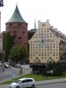 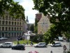 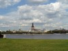 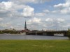 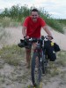 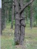